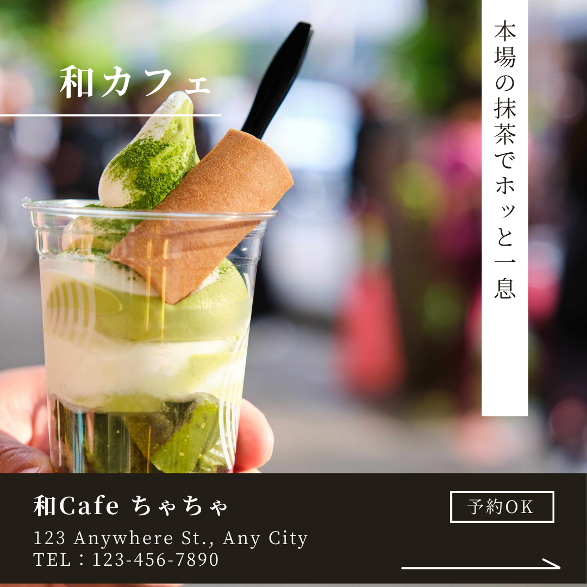
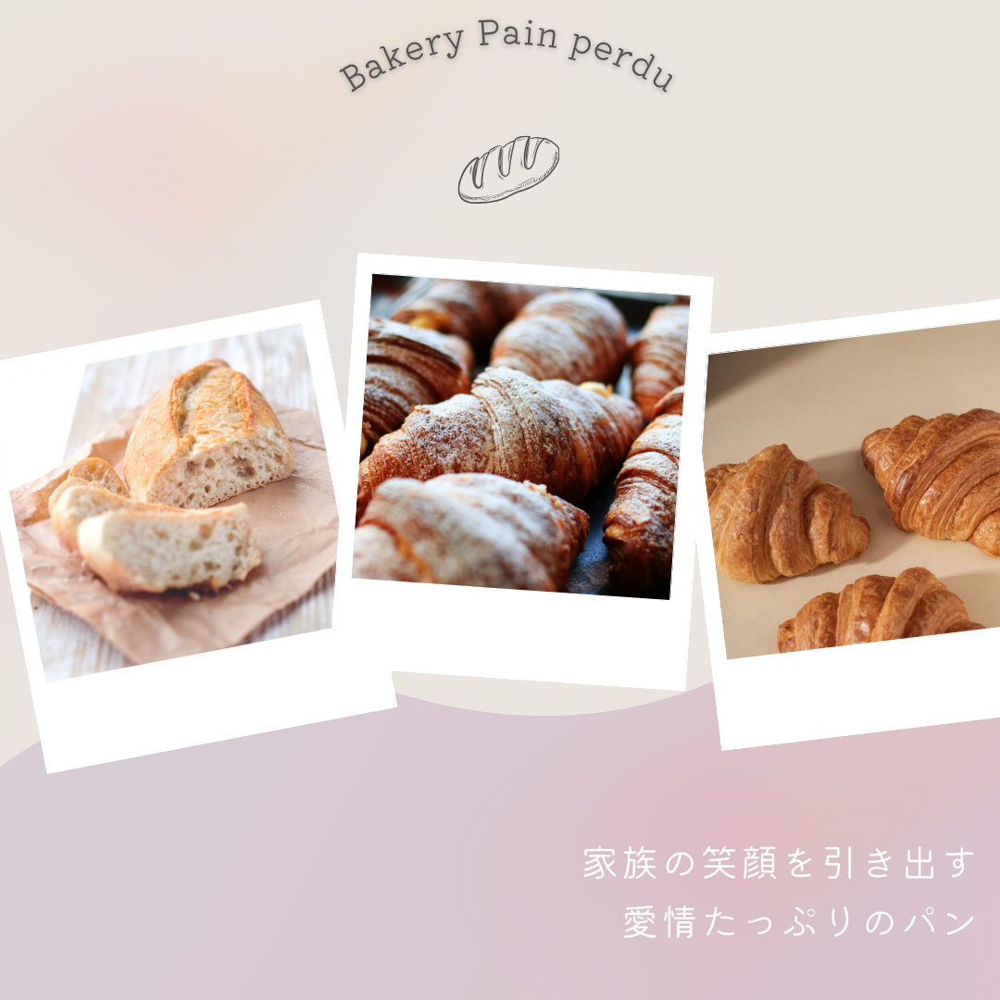
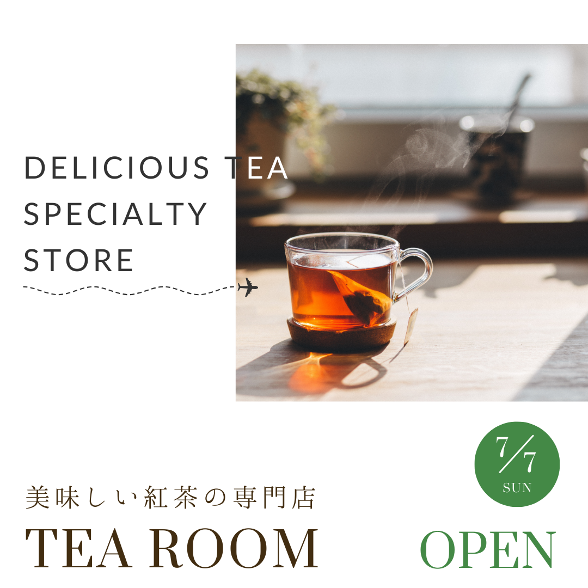
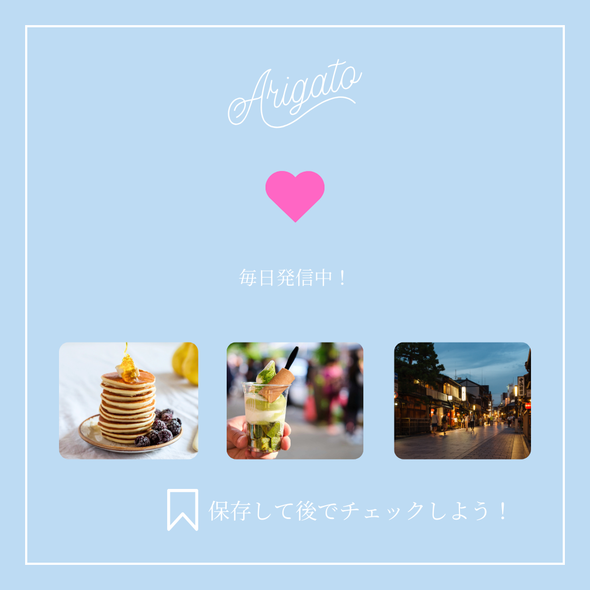
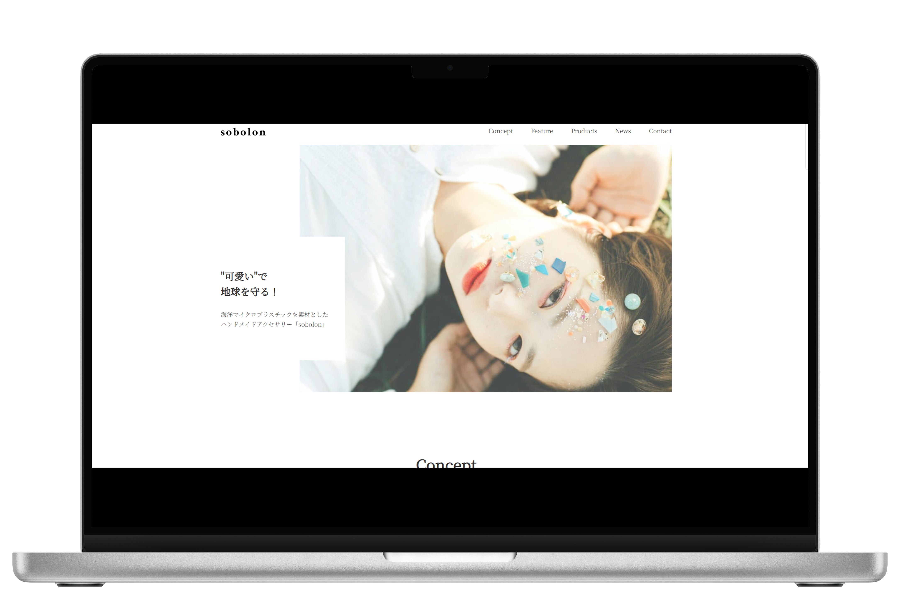
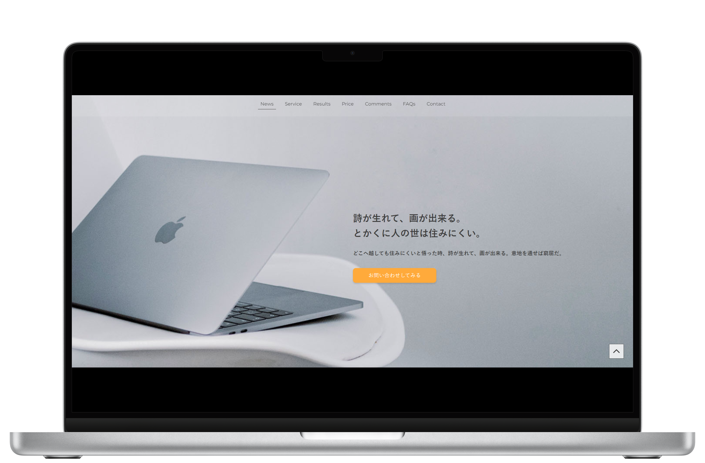

制作実績

banner
banner

banner
banner

banner

banner
banner

HP

HP

HP
This is the portfolio site of Taichi Hiraoka, a male developer living in Aichi Prefecture.
I create
application websites. It is a simple site.
Web業界に憧れを抱き、メディア系情報大学に進学。
プログラム、デザイン制作、動画編集など幅広いスキルを身につけた後、
Webエンジニアとして就職しました。
HPやLPの制作やリスティング広告の運用を経験したのち、
Webアプリケーションのエンジニアに転職し、UI/UXに特化した
フロントエンドエンジニアとして活躍してきました。
ホームページやランディングページを３年間程制作してきました UI/UXを意識したサイト制作が得意です
JavaScriptを使った開発を問題なく行うことができます。サイトに動きをつけるインタラクティブな要素やアニメーションの実装も、問題ございません。
さらに、フロントエンド開発ではReactを活用しアプリ開発が可能です
バックエンドではNode.jsを使用してサーバーサイドロジックの実装などを手掛けた経験があります
PHPを使用した開発にも対応可能です。
特にWordPressを活用したWebサイトの開発やカスタマイズの経験があります。
学生時代には、WordPressを用いてブログを運営し、テーマやプラグインのカスタマイズを通じて、柔軟なサイト構築を行っていました。
私はFigmaやAdobe Illustrator、Photoshopを使用して、効果的なUI/UXデザインやグラフィック制作が可能です。常に最新のデザイントレンドを学び、ユーザー中心のデザインアプローチで高品質な成果物を提供します。
約２年間ほど大手給湯器交換事業企業にて、リスティング広告の運用をしていました
媒体は「給湯器」「ガスコンロ」「トイレ」「キッチン」「ユニットバス」になります
今年の８月に、 Google アナリティクス認定資格を取得
HTML・CSSを使用し、デザインを正しく再現します。またJavascriptを使用し、サイトに動きを加えることも可能です。
アニメーションによって世界観を演出し、よりWebデザインの魅力を引き上げられるような実装を目指しています。
コードには規則性があり、誰が見ても分かりやすいコーディングを心掛けています。
私は、Reactを使用して、モダンでインタラクティブなWebアプリケーションを制作しています。
Reactのコンポーネントベースの設計により、効率的で再利用可能なコードを作成し、
メンテナンスしやすく拡張可能なアプリケーションを実現しています。
banner
banner
banner
banner
banner
banner
banner
HP
HP
HP